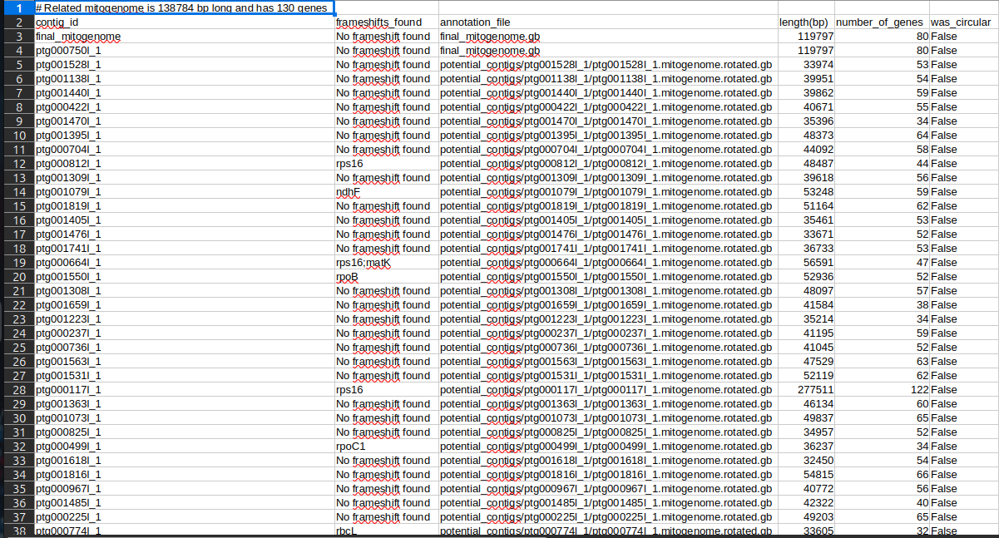

Bom dia, boa tarde e boa noite.
Rodei esse software recentemente, o mitohifi e foi uma experiencia interessante, tivemos arquivos de saída bem interessantes. O intuito do post é entender melhor o que é esse software e como ele ajudou na montagem. —
É um software que é capaz de anotar e identificar nossas contigs referentes ao DNA de alguma organela (no nosso caso Dna plastidial). Como ele faz isso? Primeiro ele instala um banco de dados, referentes aos dados de cloroplastos da sua éspecie ou de algum familiar proximo taxonomicamente. Depois disso ele começa a alinhas essas sequencias nas nossas contigs. Claro que um DNA plastidial vai ter bem mais cobertura (vai ser lido bem mais vezes pelo sequenciador) do que outro contig qualquer. Um dos outputs é um arquivo .tsv mostrando as contigs que são provalvemente referentes ao DNA de organela.
ex:

Podemos observar algumas coisas nessa imagem. Primeiro é o contig ID, depois que ele identifica os contigs de DNA plastidial ele mapeia, frameshift é em qual gene essa contig se encontra, o Hifi tenta circularizar essa sequencia porém, no nosso caso isso não é possivel por termos uma quantidade bem alta de heterozigose. Fiz isso para todas as montagens: Hap1, Hap2 e Primaria. Criei uma lista e removi essas contigs, usando o filterbyname algoritmo nativo do software Bbmap. —
Deixamos nossa montagem mais limpa e filtrada, seguimos para o proximo software que é o BlobTools, ele utiliza o arquivo BAM resultante de mapeamento, arquivos .tsv do alinhamento Diamond Blast e nossa sequencia .fasta que já está filtrada sem contaminantes. O BlobTools é uma ótima ferramenta pra vizualição de contaminantes, ainda estamos nessa fase de eliminar as contigs contaminantes sem perder nenhuma informação genômica importante. Depois de cada analise passo o arquivo ouput pelo BUSCO, além de gerar um arquivo .stat usando o Bbmap, avaliando o numero de contigs e a porcentagem de regiões duplicadas (no nosso caso todas)